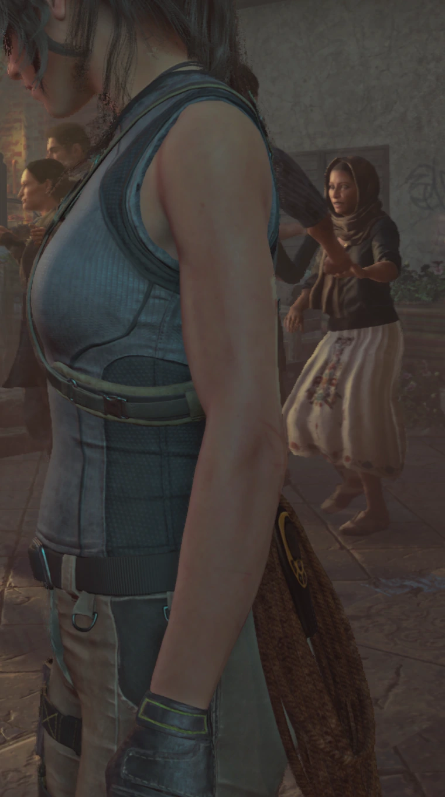
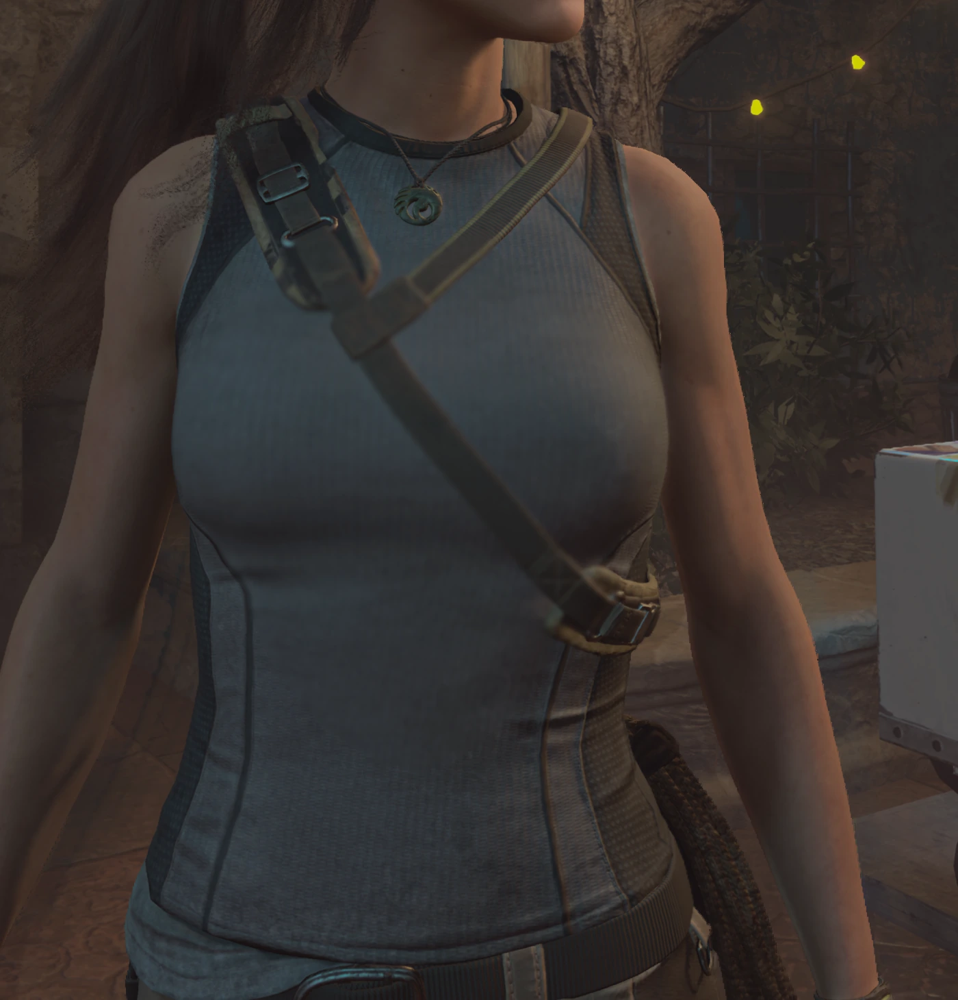
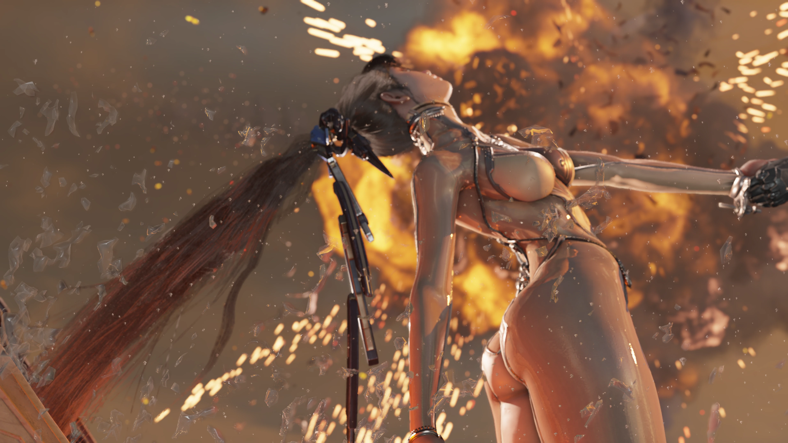
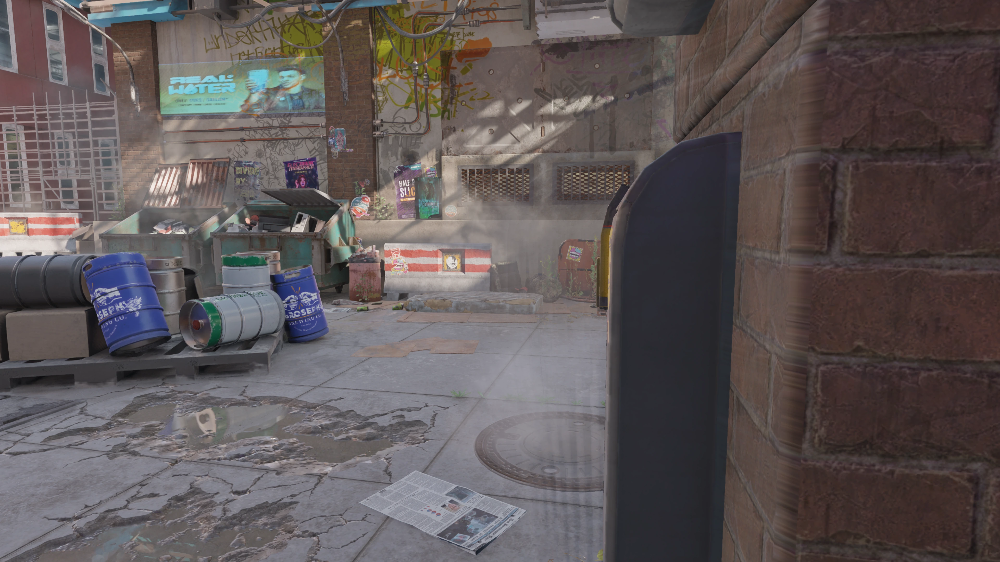

DLSS 5 neural rendering on an AMD GPU: the network every 4th frame, split evenly over 4 frames
DLSS 5 neural rendering (the small model) on an RX 7800 XT under Linux/Proton, before the upscaler. Running the network on every frame costs about 11 ms per frame here, too much for 60 fps in most games. This build runs it once every 4 frames, splits that one run into 4 parts so every frame costs about the same, and carries the result forward along the game's motion vectors in between, with fixes where the carried result no longer fits (revealed background, scene cuts, the frame's edges, lighting that changed). Pictures and settings are those of the 0.0.9-split.1 preview.
Cost per frame
| Shadow of the Tomb Raider clip, NR at 0.75 scale, 1 pass | mean | slowest frame |
|---|---|---|
| Network every frame | 11.4 ms | 11.4 ms |
| Every 4th frame, not split | 3.4 ms | 11.5 ms (one frame in four) |
| Every 4th frame, split over 4 frames (this build) | 3.6 ms | 4.1 ms |
Measured in the test harness (the plugin's own runtime over a captured clip), RX 7800 XT, one run each. Without the split the average is about the same, but every 4th frame pays the whole network: that frame misses its refresh. In game (frame generation off): Cyberpunk 2077 benchmark at 4K Balanced, highest settings, ray tracing off, holds a locked 60 fps; Elden Ring at 4K Balanced, maximum settings, ray tracing off, NR at 0.75 scale with the network every 2nd frame (split over 2), a locked 60 fps.
Slider: move the mouse to slide, click to lock, wheel to zoom, drag to pan, double-click to fit. Pick which picture is on each side in the menus.
Shadow of the Tomb Raider, Lara's arm, frames 36-47 (plays)

Shadow of the Tomb Raider, 4K output, upscaler Balanced (render 2258x1270), NR at 0.75 scale.
Night market, Lara walking with the camera panning. Twelve frames, three full 4-frame cycles. The arm and the background beside it should look like the reference on every frame, without a band where the arm was a few frames earlier and without the arm pumping darker and lighter every 4th frame.
Against the reference (PSNR, whole 4K frame): this build 42.7 dB on frames 36-47, NR off 32.8 dB; over the whole clip 42.7 vs 32.4 dB. Least close frame of the clip: frame 10, 40.6 dB.
Shadow of the Tomb Raider, Lara standing, frames 24-35 (plays)

Shadow of the Tomb Raider, 4K output, upscaler Balanced (render 2258x1270), NR at 0.75 scale.
Lara standing in the night market, the camera moving slowly. Twelve frames. Look at the arms and the torso: their lighting should stay as steady as in the reference, without a wobble in a 4-frame rhythm.
Against the reference (PSNR, whole 4K frame): this build 44.7 dB on frames 24-35, NR off 35.9 dB; over the whole clip 44.4 vs 36.2 dB. Least close frame of the clip: frame 10, 42.3 dB.
Stellar Blade demo, frame 59

Stellar Blade demo, 4K output, upscaler Quality (render 2561x1441), NR at full scale.
Eve leaving the escape pod (full frame). Look at the flying particles and at Eve: no dark trails behind the particles and no dark spots on her.
Against the reference (PSNR, whole 4K frame): this build 40.0 dB on frame 59, NR off 31.9 dB; over the whole clip 42.3 vs 34.0 dB. Least close frame of the clip: frame 51, 39.5 dB.
Cyberpunk 2077, alley, frame 74

Cyberpunk 2077, 4K output, upscaler Balanced (render 2259x1271), NR at full scale.
A fast pan past a pillar (full frame). The hardest of these clips: fast motion and a lot of background revealed behind the pillar. Revealed background is filled with the nearby edit instead of showing the unedited picture as a dark outline.
Against the reference (PSNR, whole 4K frame): this build 34.6 dB on frame 74, NR off 30.7 dB; over the whole clip 35.2 vs 30.9 dB. Least close frame of the clip: frame 46, 29.6 dB.